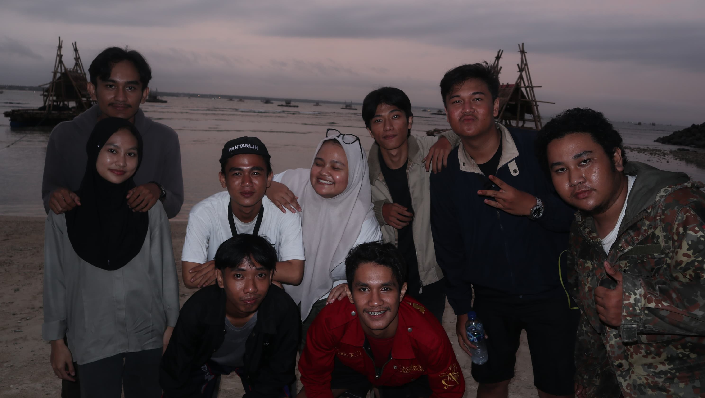

Judul Film: Malingping Eps.2

Sinopsis: ini adalah kisah perjalanan kita menuju selatan pulau jawa bagian barat
- Genre: Komedi
- Durasi: 60 Menit
- Director: Ramdhan Mudzakir
- Penulis Skenario: M Irsyad Alfaridzy
- Pemain:
- Andi Muhammad Isa
- Dylan Akbar Wiguna
- Fadhila Noor Irdiani
- Genta Rizky Buana
- M Ikhsan Anugrah Afthie
- Muhammad Irsyad Alfaridzy
- Muhammad Vikri Aprizal
- Ramdhan Mudzakir
- Salma Siti Naswa
- Veryan Anwar
- Yusuf Nur Alfarizki
- Tanggal Rilis: 16 November 2023
- Bahasa: Indonesia
Deskripsi: Film ini berisi 7 episode.